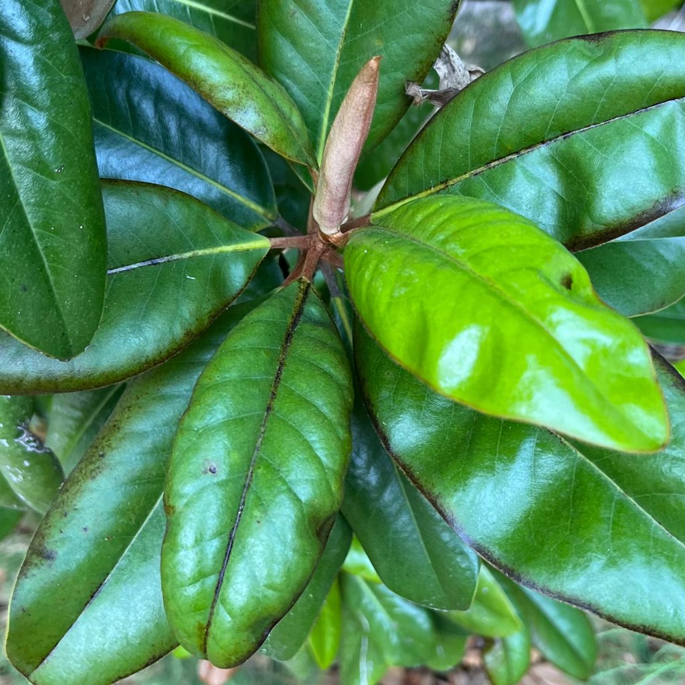

junger Blattaustrieb
Was Sie beobachten
Neue Blätter erscheinen hell, dünn, gelegentlich leicht verformt und empfindlich. Schutzhüllen können papierartig oder bräunlich wirken.
Was es ist
Frischer Austrieb ist naturgemäß zarter und heller. Farbe und Festigkeit entwickeln sich in den folgenden Tagen/Wochen.
Einordnung
Natürlicher Vorgang, kein Krankheitsbild.
Häufige Ursachen
Normales Wachstum; Lichtwechsel beeinflusst die Anfangsfarbe.
So bestätigen Sie die Diagnose
- Nur junge Blätter sind betroffen; ältere Blätter wirken normal.
- Nach 1–2 Wochen verdunkeln/strecken sich die Blätter sichtbar.
Maßnahmen
- Nichts erzwingen – keine Hüllen abziehen, sie lösen sich selbst.
- Gleichmäßig gießen; keine Nährstoffspitzen direkt auf sehr junges Gewebe.
- Hell, ohne pralle Mittagssonne platzieren (junge Blätter sind sonnenempfindlich).
Vorbeugen
Konstante Rahmenbedingungen (Licht, Feuchte, Temperatur). Zum Saisonstart niedrig dosiert düngen und langsam steigern.
Bilder
